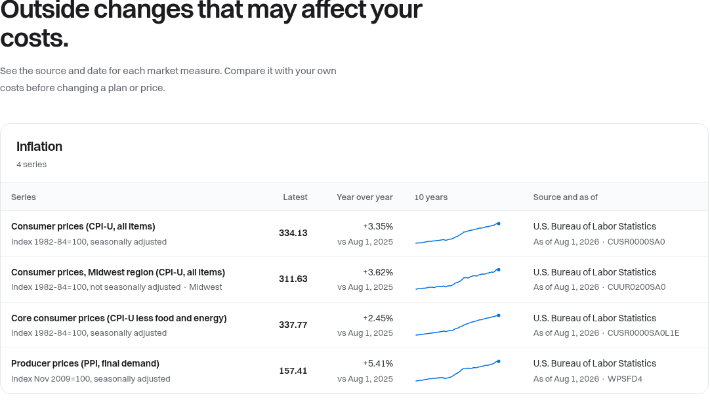
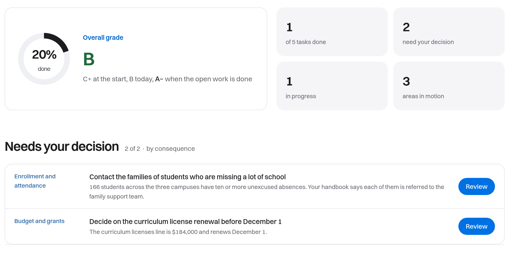

Click any number. See the line it came from.
Ask a plain question about your orders, accounts or records. Arthur answers from the systems you already use and shows the source behind every figure.
Open the to see the five records behind it.

What have we finished but not invoiced?
$41,300 of finished work has not been invoiced. Ostrander Group is the largest at $16,250, and its oldest item has waited 38 days. Invoice Ostrander first, then Harlow Dental.
Example data.
One question, carried through
From the answer to the decision.
- The answerAsk in plain words. Every figure opens to the line it came from.
- A signalArthur tells you when a fact behind your question moves.
- The decisionThe open work lands with a name beside it, ranked by consequence.
Ostrander Group's last hours were logged 38 days ago. No invoice has gone out since Aug 29.

The same thing, in other kinds of work
Pick one, then open the figures.


Every answer has four parts
- What we found
$41,300 of finished work has not been invoiced.
One short paragraph, with the figures that matter, in plain words.
- Why it matters
Ostrander Group is the largest, and has waited 38 days.
What the finding means for money, people or a deadline.
- What to do next
Invoice Ostrander first, then Harlow Dental.
A step you can take today, with a name beside it.
- Where it came from
Timesheets · row 2,102 · Sep 26
Every figure opens to the system, the date and the exact line.
Five checks run under every answer. Click one.
Each check does a different job. Choose one and the part of the answer it protects lights up.
What have we finished but not invoiced?
$41,300 of finished work has not been invoiced. Ostrander Group is the largest at $16,250, and its oldest item has waited 38 days. Invoice Ostrander first, then Harlow Dental, whose Phase 2 milestone was accepted on Oct 9.
Built for the way your organization runs
Arthur uses the names, people and records your team already knows, so answers sound like your organization.
 Property management
Property management Nonprofits
NonprofitsStart with one question
- Bring the question that costs you the most time.
- We connect one system, read-only, and answer it with the source behind every figure.
- You keep a written map of what else Arthur could read, whether or not you go further.
We give the day back.
So you can be here.